Series Temporales: Procesos ARIMA con estacionalidad
Máster de Bioestadística (Modelización Estadística)
1 Introducción
En general, la capacidad de toma de datos posibilita que el fechado de las series sea inferior al año, apareciendo la componente estacional. No es difícil disponer de series mensuales, trimestrales, diarias o incluso con frecuencia superior.
En este tema se revisan los conocimientos del tema previo, ampliándolos a fin de contemplar la presencia de estacionalidad en las series temporales
Se mantienen las hipótesis sobre el proceso generador de datos (estacionario y ergódico) y el vector de residuos (ruido blanco).
Recuerda que \(m\) es el orden estacional.
2 Procesos ARIMA con estacionalidad
2.1 Procesos autorregresivos \(AR_m(P)\)
Definición
El modelo general autorregresivo estacional de orden P, \(y_t \sim AR_m(P)\) viene definido por
\[y_t=c + \phi_m y_{t-m} + \phi_{2m} y_{t-2m} + \ldots + \phi_{Pm} y_{t-Pm} + \varepsilon_t,\]
que usando el operador retardo queda
\[(1 - \phi_m L^m - \phi_{2m} L^{2m} - \ldots - \phi_{Pm} L^{Pm})y_t = c + \varepsilon_t.\]
Propiedades
El proceso es estacionario si quedan fuera del círculo de radio unidad todas las raíces del polinomio
\[\Phi_P(z) = 1 - \phi_m z^m - \phi_{2m} z^{2m} - \ldots - \phi_{Pm} z^{Pm}.\]
Es invertible siempre.
Sobre todo,
- En la FAC las autocorrelaciones de orden múltiplo de m \((m,2m,\ldots)\) decaen exponencialmente a partir del orden P.
- En la FACP las autocorrelaciones parciales de orden múltiplo de m verifican que los P primeros valores son no nulos y todos los demás valen cero.
Ejemplos
\(y_t \sim AR_{12}(1):\;\;y_t = c + \phi_{12} y_{t-12} + \varepsilon_t\) o \((1 - \phi_{12} L^{12})y_t = c + \varepsilon_t\)
\(y_t \sim AR_7(2):\;\;y_t = c + \phi_7 y_{t-7} + \phi_{14} y_{t-14} + \varepsilon_t\) o \((1 - \phi_7 L^7 - \phi_{14} L^{14})y_t = c + \varepsilon_t\)
Simulaciones de procesos autorregresivos \(AR_m(P)\)
La Figura 1 muestra una simulación del proceso \(AR_{4}(2)\) \(y_t = 0.7y_{t-4} - 0.7y_{t-8} + \varepsilon_t\) (panel superior), y del proceso \(AR_{12}(1)\) \(y_t = 0.6y_{t-12} + \varepsilon_t\) (panel inferior). En ambos casos la muestra es de tamaño 500 y \(\varepsilon_t\) se distribuye como una normal con media cero y varianza la unidad. (Todas las simulaciones se han realizado con la función arima.sim de la librería stats.)


2.2 Procesos en medias móviles \(MA_m(Q)\)
Definición
El modelo general en medias móviles estacional de orden Q, \(y_t \sim MA_m(Q)\) viene definido por
\[y_t=c + \varepsilon_t + \theta_m \varepsilon_{t-m} + \theta_{2m} \varepsilon_{t-2m} + \ldots + \theta_{Qm} \varepsilon_{t-Qm},\] que usando el operador retardo queda
\[y_t = c + (1 + \theta_m L^m + \theta_{2m} L^{2m} + \ldots + \theta_{Qm} L^{Qm}) \varepsilon_t.\]
Propiedades
El proceso es invertible si quedan fuera del círculo de radio unidad todas las raíces del polinomio
\[\Theta_Q(z) = 1 + \theta_m z^m + \theta_{2m} z^{2m} + \ldots + \theta_{Qm} z^{Qm}.\]
Es estacionario siempre.
Sobre todo,
- En la FAC las autocorrelaciones de orden múltiplo de m verifican que los Q primeros valores son no nulos y todos los demás valen cero.
- En la FACP las autocorrelaciones parciales de orden múltiplo de m decaen exponencialmente a partir del orden Q.
Ejemplos
\(y_t \sim MA_7(1):\;\;y_t = c + \varepsilon_t + \theta_7 \varepsilon_{t-7}\) o \(y_t = c + (1 + \theta_7 L^7)\varepsilon_t\)
\(y_t \sim MA_{12}(2):\;\;y_t=c + \varepsilon_t + \theta_{12} \varepsilon_{t-12} + \theta_{24} \varepsilon_{t-24}\) o \(y_t = c + (1 + \theta_{12} L^{12} + \theta_{24} L^{24})\varepsilon_t\)
Simulaciones de procesos en medias móviles \(MA_m(Q)\)
La Figura 2 muestra una simulación del proceso \(MA_{4}(2)\) \(y_t = 0.7\varepsilon_{t-4} - 0.7\varepsilon_{t-8} + \varepsilon_t\) (panel superior), y del proceso \(MA_{12}(1)\) \(y_t = 0.6\varepsilon_{t-12} + \varepsilon_t\) (panel inferior). En ambos casos la muestra es de tamaño 500 y \(\varepsilon_t\) se distribuye como una normal con media cero y varianza la unidad.


2.3 Procesos \(ARMA_m(P,Q)\)
Definición
El modelo general \(y_t \sim ARMA_m(P,Q)\) viene definido por
$$y_t = c + m y{t-m} + {2m} y{t-2m} + + {Pm} y{t-Pm} +
t + m {t-m} + {2m} {t-2m} + + {Qm} _{t-Qm},$$ que usando el operador retardo queda
\[(1 - \phi_m L^m - \ldots - \phi_{Pm} L^{Pm})y_t = c + (1 + \theta_m L^m + \ldots + \theta_{Qm} L^{Qm}) \varepsilon_t.\]
El proceso más simple es el \(ARMA_m(1,1)\): \(y_t = c + \phi_m y_{t-m} + \theta_m \varepsilon_{t-m} + \varepsilon_{t}.\)
Propiedades
El proceso es estacionario si quedan fuera del círculo de radio unidad todas las raíces del polinomio
\[\Phi_P(z) = 1 - \phi_m z^m - \phi_{2m} z^{2m} - \ldots - \phi_{Pm} z^{Pm}.\]
El proceso es invertible si quedan fuera del círculo de radio unidad todas las raíces del polinomio
\[\Theta_Q(z) = 1 + \theta_m z^m + \theta_{2m} z^{2m} + \ldots + \theta_{Qm} z^{Qm}.\]
Sobre todo,
- En la FAC las autocorrelaciones de orden múltiplo de m decaen exponencialmente a partir del orden P.
- En la FACP las autocorrelaciones parciales de orden múltiplo de m decaen exponencialmente a partir del orden Q.
Ejemplos
\(y_t \sim ARMA_7(1, 1):\;\;y_t = c + \phi_7 y_{t-7} + \theta_7 \varepsilon_{t-7} + \varepsilon_{t}\) o \((1 - \phi_7 L^7)y_t = c + (1 + \theta_7 L^7)\varepsilon_t\).
\(y_t \sim ARMA_{12}(1, 1):\;\;y_t = c + \phi_{12} y_{t-12} + \theta_{12} \varepsilon_{t-12} + \varepsilon_{t}\) o \((1 - \phi_{12} L^{12})y_t = c + (1 + \theta_{12} L^{12})\varepsilon_t\).
Simulación de un proceso \(ARMA_m(P,Q)\)
La Figura 3 muestra una simulación de tamaño 500 para el proceso \(ARMA_7(1,1)\) \(y_t = 0.7y_{t-7} - 0.5\varepsilon_{t-7} + \varepsilon_t\).

2.4 Procesos \(ARIMA_m(P,D,Q)\)
Si la serie \(y_t\) no es estacionaria en su parte estacional, pero tras diferenciarla \(D\) veces se hace estacionaria, diremos que la serie es integrada estacionalmente de orden \(D\): \(y_t \sim I_m(D)\). Por tanto,
- una serie estacionaria estacionalmente se indicará como \(y_t \sim I_m(0)\).
- \(y_t \sim I_m(1)\) es equivalente a \(\nabla_m y_t = (1 - L^m)y_t \sim I_m(0)\)
Una serie \(y_t\) sigue un proceso \(ARIMA_m(P,D,Q)\) si:
- \(y_t \sim I_m(D)\) (hay que diferenciarla estacionalmente \(D\) veces para hacerla estacionaria), y
- \(\nabla_m^D y_t \sim ARMA_m(P,Q)\).
Entonces, podemos escribir \(y_t \sim ARIMA_m(P,D,Q)\) como \[\begin{equation*} \begin{array}{c@{\quad}ccc} (1 - \phi_m L^m - \ldots - \phi_{Pm} L^{Pm}) & (1- L^m)^D y_t & = & c + (1 + \theta_m L^m + \ldots + \theta_{Qm} L^{Qm}) \varepsilon_t \\ \uparrow & \uparrow & & \uparrow \\ AR_m(P) & I_m(D) & & MA_m(Q) \end{array} \end{equation*}\]
Ejemplo
- \(y_t \sim ARIMA_{12}(1, 1, 1):\;\;(1 - \phi_{12} L^{12})(1- L^{12}) y_t = c + (1 + \theta_{12} L^{12}) \varepsilon_t\) o \(y_t = c + y_{t-12} + \phi_{12}(y_{t-12} - y_{t-24}) + \theta_{12} \varepsilon_{t-12} + \varepsilon_t\).
2.5 Proceso \(ARIMA_m(p,d,q)(P,D,Q)\)
La realidad nos muestra que la mayoría de las series con estacionalidad se ajustan a una combinación de procesos regulares y estacionales.
El proceso \(ARIMA_m(p, d, q)(P, D, Q)\) puede ser expresado de forma abreviada como
\[\Phi_p(L)\Phi_P(L^m)\nabla^d\nabla_m^D y_t = c + \Theta_q(L)\Theta_Q(L^m)\varepsilon_t,\]
o menos sucintamente como \[\begin{equation*} \begin{array}{ccccc} AR(p) & AR_m(P) & I(d) & I_m(D) & \\ \downarrow & \downarrow & \downarrow & \downarrow & \\ (1 - \phi_1 L - \ldots - \phi_p L^p) & (1 - \phi_m L^m - \ldots - \phi_{Pm} L^{Pm}) & (1 - L)^d & (1- L^m)^Dy_t & = \\ c + (1 + \theta_1 L + \ldots + \theta_q L^q) & (1 + \theta_m L^m + \ldots + \theta_{Qm} L^{Qm}) \varepsilon_t & & & \\ \uparrow & \uparrow & & & \\ MA(q) & MA_m(Q) & & & \end{array} \end{equation*}\]
Por ejemplo, entre las series mensuales uno de los procesos más comunes es \(ARIMA_{12}(0, 1, 1)(0, 1, 1)\), denominado modelo de las aerolíneas por ser el proceso generador de datos de muchas series mensuales de transporte de pasajeros, en concreto la serie mensual de pasajeros de avión. La ecuación de este modelo es
\[(1-L)(1-L^{12})y_t = (1+ \theta_1L)(1 + \theta_{12}L^{12})\varepsilon_t\]
que si desarrollamos queda
\[y_t = y_{t-1} + (y_{t-12} - y_{t-13}) + \theta_1 \varepsilon_{t-1} + \theta_{12} \varepsilon_{t-12} + \theta_{13} \varepsilon_{t-13} + \varepsilon_t \]
- El número de pasajeros del mes \(t\) es el mismo que el del mes previo \(t-1\), más la diferencia entre estos meses observada el año pasado.
- Si en los meses usados para la predicción (\(t-1\), \(t-12\) y \(t-12\)) ha ocurrido algo extraordinario, hay que tenerlo en cuenta a la hora de afinar la predicción.
Simulaciones de un proceso \(ARIMA_m(p,d,q)(P,D,Q)\)
La Figura 4 muestra una simulación de tamaño 1000 para el modelo de las aerolíneas, donde se ha supuesto que \(\theta_1=0.7\) y \(\theta_{12}=-0.5\).

3 Ejemplos
3.1 Nacimientos
Vamos a aplicar la metodología de Box-Jenkins a la serie de nacimientos en España desde el año 2000 (véase Figura 5).
nacimientos <- read.csv2("./series/nacimientos.csv", header = TRUE)
nacimientos <- ts(nacimientos[, 2],
start = c(1975, 1),
freq = 12)
nacimientos <- window(nacimientos, start = 2000)
autoplot(nacimientos,
xlab = "",
ylab = "Nacimientos",
main = "")
Transformación de la serie
Ya vimos en el Tema 3 que para que la serie sea estacionaria y ergódica había que diferenciarla tanto regular como estacionalmente (d = D = 1). Además, trabajaremos con el logaritmo de la serie para reducir la posible heterocedasticidad y ganar en interpretabilidad. Es decir, trabajaremos con la siguiente serie transformada
\[\nabla\nabla_{12}\log(nacimientos_t) \sim I(0)I_{12}(0).\]
Identificación
Tras transformar la serie, vamos a identificar los valores de \(p\), \(q\), \(P\) y \(Q\) a partir de la FAC y la FACP.
ggtsdisplay(diff(diff(log(nacimientos), lag = 12)), lag = 48)
Analizando la FAC y la FACP (Figura 6) podemos pensar que:
- FAC: decrecimiento en la parte regular y estacional
- FACP: dos autocorrelaciones fuera del IC(95%) en la parte regular (\(r_1\) y \(r_2\)) y otras dos en la parte estacional (\(r_{12}\) y \(r_{24}\)).
Pero sobre todo, observamos que no es fácil la identificación.
¿Qué nos indica auto.arima? Primero vamos a generar e incluir en el proceso de autoidentificación las variables asociadas a los efectos de intervención que hemos detectado en los temas previos. En concreto, hemos visto que el número de días del mes explica el número de nacimientos. Este efecto era muy claro para los meses de febrero bisiestos. Para el calculo de la variable que recoge el número de días del mes usaremos la función monthdays de la librería forecast que devuelve el número de días de cada mes o trimestre de una serie.
monthdays(nacimientos) Jan Feb Mar Apr May Jun Jul Aug Sep Oct Nov Dec
2015 31 28 31 30 31 30 31 31 30 31 30 31
2016 31 29 31 30 31 30 31 31 30 31 30 31
2017 31 28 31 30 31 30 31 31 30 31 30 31
2018 31 28 31 30 31 30 31 31 30 31 30 31
2019 31 28 31 30 31 30 31 31 30 31 30 31Por otro lado, los periodos vacacionales pueden afectar la programación de las cesáreas e influir en el número de nacimientos. Como la Semana Santa es un periodo festivo que puede caer en marzo o abril, dependiendo del año, los nacimientos en estos dos meses pueden variar según como cae la Semana Santa. Para capturar este efecto, usaremos la función easter de la librería forecast que devuelve para cada mes la proporción de días de la Semana Santa que contiene (considerando solo del Viernes Santo al Domingo de Resurrección, tres días).
easter(nacimientos) Jan Feb Mar Apr May Jun Jul Aug Sep Oct Nov Dec
2015 0.00 0.00 0.00 1.00 0.00 0.00 0.00 0.00 0.00 0.00 0.00 0.00
2016 0.00 0.00 1.00 0.00 0.00 0.00 0.00 0.00 0.00 0.00 0.00 0.00
2017 0.00 0.00 0.00 1.00 0.00 0.00 0.00 0.00 0.00 0.00 0.00 0.00
2018 0.00 0.00 0.67 0.33 0.00 0.00 0.00 0.00 0.00 0.00 0.00 0.00
2019 0.00 0.00 0.00 1.00 0.00 0.00 0.00 0.00 0.00 0.00 0.00 0.00Además, en enero de 2011 el número de nacimientos era atípico.
DiasMes <- monthdays(nacimientos)
SemanaSanta <- easter(nacimientos)
d0111 <- 1*(cycle(nacimientos) == 1 & trunc(time(nacimientos)) == 2011)
auto.arima(nacimientos,
d = 1,
D = 1,
lambda = 0,
xreg = cbind(DiasMes, SemanaSanta, d0111))Series: nacimientos
Regression with ARIMA(0,1,1)(0,1,2)[12] errors
Box Cox transformation: lambda= 0
Coefficients:
ma1 sma1 sma2 DiasMes SemanaSanta d0111
-0.4544 -0.6131 -0.1738 0.0341 -0.0156 -0.0694
s.e. 0.0666 0.0674 0.0668 0.0078 0.0047 0.0164
sigma^2 = 0.0004364: log likelihood = 555.16
AIC=-1096.31 AICc=-1095.8 BIC=-1072.34Indica \(ARIMA_{12}(0,1,1)(0,1,2)\).
Una alternativa a auto.arima es la función seas de la librería seasonal. La función seas tiene como ventajas que también analiza la conveniencia de usar la transformación logarítmica, que identifica posibles efectos calendario y valores extremos, y que suele ser más parsimoniosa que auto.arima. Su desventaja es que sólo se puede aplicar para series mensuales o trimestrales. Veamos que identificación ofrece seas:
summary(seas(nacimientos))
Call:
seas(x = nacimientos)
Coefficients:
Estimate Std. Error z value Pr(>|z|)
Weekday 0.0028161 0.0002681 10.504 < 2e-16 ***
Easter[1] -0.0127198 0.0037801 -3.365 0.000766 ***
AO2010.Dec 0.0656998 0.0133509 4.921 8.61e-07 ***
MA-Nonseasonal-01 0.3447018 0.0612765 5.625 1.85e-08 ***
MA-Seasonal-12 0.7477045 0.0466619 16.024 < 2e-16 ***
---
Signif. codes: 0 '***' 0.001 '**' 0.01 '*' 0.05 '.' 0.1 ' ' 1
SEATS adj. ARIMA: (0 1 1)(0 1 1) Obs.: 240 Transform: log
AICc: 3597, BIC: 3617 QS (no seasonality in final): 0
Box-Ljung (no autocorr.): 27.65 Shapiro (normality): 0.993 En primer lugar, la función identifica el modelo de las aerolíneas para la transformación logarítmica de Nacimientos. Este resultado está en consonancia con el alcanzado con la función auto.arima. Además, identifica un valor extremo en diciembre de 2010, un efecto calendario Semana Santa y un efecto calendario días laborables del mes (que podemos entender similar a nuestro efecto días del mes).
Tras estos análisis alternativos, decidimos que la identificación de partida es \(ARIMA_{12}(0,1,1)(0,1,2)+AI\),
\[(1 - L^{12})(1 - L)\log(nacimientos_t) = (1 + \theta_1 L)(1 + \theta_{12} L^{12} + \theta_{24} L^{24})\varepsilon_t + AI.\]
donde AI recoge las variables de intervención incluidas en auto.arima y la identificada por seas.
Estimación (y valores extremos)
Vamos a estimar el modelo identificado, incluidas las variables de intervención.
d1210 <- 1*(cycle(nacimientos) == 12 & trunc(time(nacimientos)) == 2010)
nac.ar1 <- Arima(nacimientos,
order = c(0, 1, 1),
seasonal = c(0, 1, 2),
lambda = 0,
xreg = cbind(DiasMes, SemanaSanta, d1210, d0111))
nac.ar1Series: nacimientos
Regression with ARIMA(0,1,1)(0,1,2)[12] errors
Box Cox transformation: lambda= 0
Coefficients:
ma1 sma1 sma2 DiasMes SemanaSanta d1210 d0111
-0.4835 -0.6222 -0.1545 0.0330 -0.0156 0.0583 -0.0532
s.e. 0.0649 0.0698 0.0698 0.0077 0.0046 0.0168 0.0166
sigma^2 = 0.0004167: log likelihood = 561.17
AIC=-1106.34 AICc=-1105.68 BIC=-1078.94Ya tenemos un modelo de partida, veamos si es necesaria más intervención.
error <- residuals(nac.ar1)
sderror <- sd(error)
autoplot(error, series="Error",
colour = "black",
xlab = "",
ylab = "Error",
main = "") +
geom_hline(yintercept = c(-3, -2,2, 3)*sderror,
colour = c("red", "green", "green", "red"),
lty = 2) +
scale_x_continuous(breaks= seq(2000, 2020, 2)) 
Se observa que hay tres candidatos a valores atípicos en diciembre 2006, abril de 2016 y junio de 2016, dado que los errores asociados se acercan o superan las 3 desviaciones típicas. Por tanto,
- Se crea una variable de intervención para cada caso
- Se estima de nuevo el modelo incluyendo estas variables (
auto.arimaidentifica el mismo modelo). - Se vuelve a analizar si quedan valores atípicos
d1206 <- 1*(cycle(nacimientos) == 12 & trunc(time(nacimientos)) == 2006)
d0416 <- 1*(cycle(nacimientos) == 4 & trunc(time(nacimientos)) == 2016)
d0616 <- 1*(cycle(nacimientos) == 6 & trunc(time(nacimientos)) == 2016)
nac.ar2 <- Arima(nacimientos,
order = c(0, 1, 1),
seasonal = c(0, 1, 2),
lambda = 0,
xreg = cbind(DiasMes, SemanaSanta,
d1206, d1210, d0111, d0416, d0616))
nac.ar2Series: nacimientos
Regression with ARIMA(0,1,1)(0,1,2)[12] errors
Box Cox transformation: lambda= 0
Coefficients:
ma1 sma1 sma2 DiasMes SemanaSanta d1206 d1210 d0111
-0.4427 -0.6395 -0.1399 0.0321 -0.0206 -0.0404 0.0559 -0.0545
s.e. 0.0690 0.0730 0.0742 0.0073 0.0046 0.0155 0.0160 0.0158
d0416 d0616
-0.0504 0.0293
s.e. 0.0161 0.0152
sigma^2 = 0.0003855: log likelihood = 571.64
AIC=-1121.28 AICc=-1120.05 BIC=-1083.61error <- residuals(nac.ar2)
sderror <- sd(error)
autoplot(error, series="Error",
colour = "black",
xlab = "",
ylab = "Error",
main = "") +
geom_hline(yintercept = c(-3, -2, 2, 3)*sderror,
colour = c("red", "green", "green", "red"),
lty = 2) +
scale_x_continuous(breaks= seq(2000, 2020, 2)) 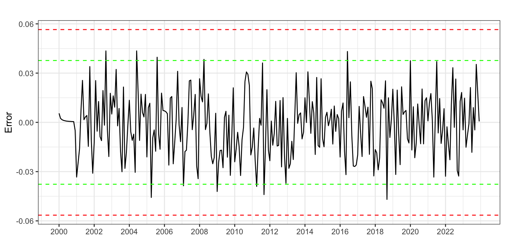
Es posible que alguno de los errores más elevados corresponda a un intervención, pero a fin de no alargar este ejemplo vamos a asumir que ya no hay valores extremos.
Compensación
Podemos observar que en todos los modelos estimados los coeficientes de las variables de intervención de los meses consecutivos diciembre de 2010 y enero de 2011 son iguales pero de signo opuesto. A este tipo de intervención se le denomina compensación: el efecto extraordinario en un periodo se compensa con un efecto de igual magnitud pero signo opuesto en el periodo siguiente.
La causa detrás de esta compensación puede ser tan prosaica como que por error muchos nacimientos ocurridos en enero de 2011 se asignaron informáticamente a diciembre de 2010. O quizás algo pasó en esos meses que adelanto un número considerable de nacimientos.
Vamos a crear una variable de intervención asociada a esta compensación. Es tan sencillo como definir una variable ficticia que valga cero siempre excepto para los meses de diciembre de 2010 y enero de 2011 que valdrá 1 y - 1 respectivamente.
d12100111 <- d1210 - d0111Ahora vamos a sustituir las dos variables ficticias d1210 y d0111 del modelo por la compensación d12100111.
nac.ar3 <- Arima(nacimientos,
order = c(0, 1, 1),
seasonal = c(0, 1, 2),
lambda = 0,
xreg = cbind(DiasMes, SemanaSanta,
d1206, d12100111, d0416, d0616))
nac.ar3Series: nacimientos
Regression with ARIMA(0,1,1)(0,1,2)[12] errors
Box Cox transformation: lambda= 0
Coefficients:
ma1 sma1 sma2 DiasMes SemanaSanta d1206 d12100111
-0.4420 -0.6393 -0.1402 0.0321 -0.0206 -0.0405 0.0552
s.e. 0.0679 0.0729 0.0740 0.0073 0.0046 0.0155 0.0095
d0416 d0616
-0.0503 0.0293
s.e. 0.0161 0.0152
sigma^2 = 0.0003837: log likelihood = 571.64
AIC=-1123.28 AICc=-1122.26 BIC=-1089.03Los coeficientes estimados en este modelo son prácticamente iguales a los obtenidos en el modelo previo (sin la compensación).
Por último, veamos si todos los coeficientes del modelo son significativos. Para ello, aplicamos la prueba de Wald.
ancho <- max(nchar(names(coef(nac.ar3)))) + 2
for(i in 1:length(coef(nac.ar3))) {
wt <- wald.test(b = coef(nac.ar3),
Sigma = vcov(nac.ar3),
Terms = i)
cat("\nCoeficiente: ",
format(names(coef(nac.ar3))[i], width = ancho),
"valor de p: ",
formatC(wt$result$chi2[3], digits = 4, format = "f"))
}
Coeficiente: ma1 valor de p: 0.0000
Coeficiente: sma1 valor de p: 0.0000
Coeficiente: sma2 valor de p: 0.0582
Coeficiente: DiasMes valor de p: 0.0000
Coeficiente: SemanaSanta valor de p: 0.0000
Coeficiente: d1206 valor de p: 0.0091
Coeficiente: d12100111 valor de p: 0.0000
Coeficiente: d0416 valor de p: 0.0018
Coeficiente: d0616 valor de p: 0.0544El coeficiente estacional en medias móviles de orden dos no resulta individualmente significativo al 5% (aunque si lo sería al 10%). Vamos a optar por eliminarlo. Tampoco es significativo el coeficiente de la intervención de junio de 2016, sin embargo su efecto (Figura 7) es tan patente que vamos a dejarlo en el modelo.
nac.ar4 <- Arima(nacimientos,
order = c(0, 1, 1),
seasonal = c(0, 1, 1),
lambda = 0,
xreg = cbind(DiasMes, SemanaSanta,
d1206, d12100111, d0416, d0616))
nac.ar4Series: nacimientos
Regression with ARIMA(0,1,1)(0,1,1)[12] errors
Box Cox transformation: lambda= 0
Coefficients:
ma1 sma1 DiasMes SemanaSanta d1206 d12100111 d0416
-0.4737 -0.7523 0.0317 -0.0209 -0.0471 0.0582 -0.0510
s.e. 0.0619 0.0479 0.0076 0.0049 0.0156 0.0097 0.0166
d0616
0.0295
s.e. 0.0158
sigma^2 = 0.000388: log likelihood = 569.86
AIC=-1121.72 AICc=-1120.89 BIC=-1090.89Validación
Error de estimación
El error medio de -76 es muy bajo en comparación con el valor medio de la serie, es decir, no hay sesgo.
En media nos equivocamos en 706 bebés (RMSE) y el error porcentual medio es del 1.5%.
accuracy(nac.ar4) ME RMSE MAE MPE MAPE MASE ACF1
Training set -75.66 705.7 568.84 -0.22 1.54 0.41 0.02
Incorrelación, Homocedasticidad y Normalidad
Veamos ahora si el residuo es ruido blanco.
error <- residuals(nac.ar4)
Box.test(error, lag = 2,type = "Ljung-Box")
Box-Ljung test
data: error
X-squared = 1.628, df = 2, p-value = 0.4431Box.test(error, lag = 24,type = "Ljung-Box")
Box-Ljung test
data: error
X-squared = 120.39, df = 24, p-value = 8.216e-15Box.test(error^2, lag = 2, type = "Ljung-Box")
Box-Ljung test
data: error^2
X-squared = 1.7214, df = 2, p-value = 0.4229Box.test(error^2, lag = 24, type = "Ljung-Box")
Box-Ljung test
data: error^2
X-squared = 26.451, df = 24, p-value = 0.3307jarque.bera.test(error)
Jarque Bera Test
data: error
X-squared = 2.0706, df = 2, p-value = 0.3551ggAcf(error, lag = 36, ylim = c(-0.3, 0.3), main = "")
Claramente hay autocorrelaciones significativas, pero en retardos no relevantes (véase Figura 9). El error muestra ser homocedástico y seguir una distribución normal.
Interpretación
El modelo teórico es \(log(nacimientos) \sim ARIMA_{12}(0, 1, 1)(0, 1, 1) + AI\),
\[(1 - L^{12})(1 - L)\log(nacimientos_t) = (1 + \theta_1 L)(1 + \theta_{12} L^{12})\varepsilon_t + AI.\]
Si sustituimos \((1 - L^{12})\log(nacimientos_t)\) por \(TVA_{nacimientos_t}\), la tasa de variación anual de los nacimientos, y desarrollamos queda
\[TVA_{nacimientos_t} = TVA_{nacimientos_{t-1}} + \theta_1 \varepsilon_{t-1} + \theta_{12} \varepsilon_{t-12} + \theta_1\theta_{12} \varepsilon_{t-13} + \varepsilon_{t}+\]
\[\gamma_1 \cdot DiasMes_t + \gamma_2 \cdot SemanaSanta +\gamma_3 \cdot d1206_t + \gamma_4 \cdot d12100111_t +\]
\[\gamma_5 \cdot d0416_t + \gamma_6 \cdot d0616_t.\]
Finalmente, el modelo estimado es,
\[\widehat{TVA}_{nacimientos_{t}} = TVA_{nacimientos_{t-1}} - 0.47\varepsilon_{t-1} - 0.75\varepsilon_{t-12} + 0.36\varepsilon_{t-13} + \]
\[0.032 \cdot DiasMes_t - 0.021 \cdot SemanaSanta - 0.047 \cdot d1206_t + 0.058 \cdot d12100111_t\]
\[- 0.051 \cdot d0416_t + 0.029 \cdot d0616_t.\]
En cada mes, la tasa de variación anual de los nacimientos es la misma que la del mes pasado (\(\widehat{TVA}_{nacimientos_t} = TVA_{nacimientos_{t-1}}\)).
Además, si algunos de los meses necesarios para predecir fue anómalo, el error hay que tenerlo en cuenta para afinar la previsión.
Respecto de la intervención, cada día adicional de un mes nacen un 3.2% más bebés. El mes en que cae la Semana Santa los nacimientos caen un 2.1%. Por alguna razón, en diciembre de 2006 hubo un 4.7% menos de nacimientos de lo esperado; en diciembre de 2010 hubo un 5.8% más de nacimientos de lo esperado que fue compensado en enero de 2011; en abril de 2016 hubo un 5.1% menos de nacimientos de lo esperado; y en junio de 2016 hubo un 2.9% más de nacimientos de lo esperado.
Predicción de la serie
Una vez dado por válido el modelo podemos pasar a realizar predicciones. Hay que tener en cuenta que hay siete variables de intervención, dos de ellas son efectos calendario (DiasMes y SemanaSanta), para las que debemos indicar qué valores tomarán en el periodo de predicción. Vamos a fijar el horizonte de predicción en cuatro años y mostrar los resultados numérica (solo para el primer año) y gráficamente (Figura 10).
tmp <- ts(rep(0, 48), start = 2020, freq = 12)
pdm <- monthdays(tmp)
pss <- easter(tmp)
pnac.ar2 <- forecast(nac.ar2,
h = 48,
xreg = cbind(pdm, pss, rep(0,48), rep(0,48),
rep(0,48), rep(0,48), rep(0,48)),
level = 95)
pnac.ar2 Point Forecast Lo 95 Hi 95
Jan 2020 29412.83 28302.46 30566.75
Feb 2020 27075.56 25908.65 28295.02
Mar 2020 28758.33 27383.22 30202.50
Apr 2020 27631.70 26192.64 29149.81
May 2020 28821.23 27207.37 30530.82
Jun 2020 27865.89 26204.15 29633.02
Jul 2020 30053.52 28158.84 32075.68
Aug 2020 29936.81 27953.15 32061.24
Sep 2020 29948.35 27872.46 32178.84
Oct 2020 30578.87 28370.26 32959.42
Nov 2020 28679.74 26528.40 31005.54
Dec 2020 28439.39 26230.03 30834.86autoplot(pnac.ar2,
ylab = "Nacimientos",
main = "") +
scale_x_continuous(breaks= seq(2000, 2024, 4)) 
Error de predicción extra-muestral según horizonte temporal
Asumimos que se precisan diez años para hacer una buena estimación, \(k = 120\), y fijaremos el horizonte temporal en un año, \(h = 12\) meses.
El código es aun más complejo que el visto en el tema previo. Por un lado, hemos de tener en cuenta que hay variables de intervención y por otro lado que la función Arima podría fallar en el proceso de estimación.
k <- 120
h <- 12
T <- length(nacimientos)
s<-T - k - h
mapeArima <- matrix(NA, s + 1, h)
X <- data.frame(cbind(DiasMes, SemanaSanta, d1206, d1210, d0111, d0416, d0616))
for (i in 0:s) {
train.set <- subset(nacimientos, start = i + 1, end = i + k)
test.set <- subset(nacimientos, start = i + k + 1, end = i + k + h)
X.train <- data.frame(X[(i + 1):(i + k),])
hay <- colSums(X.train)
X.train <- X.train[, hay>0]
X.test <- data.frame(X[(i + k + 1):(i + k + h),])
X.test <- X.test[, hay>0]
if (length(X.train) > 0) {
fit <- try(Arima(train.set,
order = c(0, 1, 1),
seasonal = c(0, 1, 1),
lambda = 0,
xreg=as.matrix(X.train)))
} else {
fit <- try(Arima(train.set,
order = c(0, 1, 1),
seasonal = c(0, 1, 1),
lambda = 0))
}
if(!is.element("try-error", class(fit))) {
if (length(X.train) > 0)
fcast <- forecast(fit, h = h, xreg = as.matrix(X.test)) else
fcast <- forecast(fit, h = h)
mapeArima[i + 1,] <- 100*abs(test.set - fcast$mean)/test.set
}
}
errorArima <- colMeans(mapeArima, na.rm = TRUE)
errorArima [1] 1.890887 2.103159 2.253288 2.574191 2.539895 2.593832 2.764437 2.746884
[9] 2.824433 3.054107 3.139687 3.277289ggplot() +
geom_line(aes(x = 1:12, y = errorArima), colour = "Blue") +
ggtitle("") +
xlab("Horizonte temporal de predicción") +
ylab("%") +
scale_x_continuous(breaks= 1:12)
La Figura 11 revela que el error de predicción aumenta de forma regular según aumenta el horizonte de predicción, pero incluso a un año vista, se mantiene bajo.
3.2 Exportaciones
Consideremos las serie de exportaciones de bienes desde España hacía la UE27 (conjunto de 27 países de la Unión Europea, con Reino Unido ya ha excluido). La serie va de enero de 1999 hasta diciembre de 2021 y está en millones de euros.
exportaciones <- read.csv2("./series/Exportaciones.csv", header = TRUE)
exportaciones <- ts(exportaciones,
start = c(1999, 1),
freq = 12)
autoplot(exportaciones,
xlab = "",
ylab = "Millones de €",
main = "")
Transformación de la serie
La Figura 12 deja claro que la serie precisa ser diferenciada para ser estacionaria. Por la naturaleza de la serie previsiblemente será necesaria la doble diferenciación regular y estacional, y trabajaremos con la transformación logarítmica.
ggAcf(log(exportaciones), lag = 48, xlab = "", ylab = "", main = "")
ggAcf(diff(log(exportaciones)), lag = 48, xlab = "", ylab = "", main = "")
ggAcf(diff(log(exportaciones), lag = 12), lag = 48, xlab = "", ylab = "", main = "")
ggAcf(diff(diff(log(exportaciones), lag = 12)), lag = 48, xlab = "", ylab = "", main = "")


ndiffs(log(exportaciones))[1] 1nsdiffs(log(exportaciones)) [1] 1Para que la serie sea estacionaria y ergódica es necesaria la doble diferenciación regular y estacional. Es decir, trabajaremos con la siguiente serie transformada \[\nabla\nabla_{12}\log(exportaciones_t) \sim I(0)I_{12}(0).\]
Identificación
La Figura 12 muestra dos periodos con una marcada intervención: al inicio de la Gran Recesión (2008-2014) y durante el periodo más duro de la Covid-19 en el año 2020. Además, por la naturaleza de la serie es previsible que exista un efecto días del mes o días laborables y un efecto Semana Santa.
Si probamos con la función auto.arima, indicando la doble diferenciación, los días del mes y la Semana Santa, no sugiere \(ARIMA_{12}(1,1,1)(2,1,2)\). Demasiado complejo.
Veamos qué nos indica seas.
summary(seas(exportaciones))
Call:
seas(x = exportaciones)
Coefficients:
Estimate Std. Error z value Pr(>|z|)
Weekday 0.0094000 0.0005091 18.462 < 2e-16 ***
Easter[1] -0.0671147 0.0073688 -9.108 < 2e-16 ***
AO2007.Dec -0.0992204 0.0268412 -3.697 0.000219 ***
LS2008.Dec -0.2042548 0.0289028 -7.067 1.58e-12 ***
LS2020.Mar -0.2066604 0.0310729 -6.651 2.91e-11 ***
AO2020.Apr -0.3803478 0.0300162 -12.671 < 2e-16 ***
AO2020.May -0.1820426 0.0293634 -6.200 5.66e-10 ***
MA-Nonseasonal-01 0.4151852 0.0555305 7.477 7.62e-14 ***
MA-Seasonal-12 0.6278005 0.0481551 13.037 < 2e-16 ***
---
Signif. codes: 0 '***' 0.001 '**' 0.01 '*' 0.05 '.' 0.1 ' ' 1
SEATS adj. ARIMA: (0 1 1)(0 1 1) Obs.: 276 Transform: log
AICc: 3871, BIC: 3906 QS (no seasonality in final): 0
Box-Ljung (no autocorr.): 43.82 ** Shapiro (normality): 0.9953
Messages generated by X-13:
Warnings:
- At least one visually significant trading day peak has been
found in one or more of the estimated spectra.El modelo identificado es el de las aerolíneas para la transformación logarítmica de Exportaciones. Respecto de la intervención, identifica dos efectos calendario: días laborables y Semana Santa. También se identifican hasta cinco intervenciones no asociadas a efectos calendario: tres pulsos –intervenciones que afectan un solo mes (AO)– y dos cambios permanentes –intervenciones que afectan un rango elevado de meses (LS):1
- Un cambio permanente (level shift o LS) empieza en diciembre de 2008. Es decir, la Gran Recesión generó una caída permanente de las exportaciones españolas a la UE27.
- El otro cambio permanente empieza en marzo de 2020: el confinamiento generó otra caída permanente de las exportaciones.
- También asociado a la Covid-19 están los pulsos de abril y mayo de 2020.
- Por último, hay un pulso asociado a diciembre de 2007
Estimación (y valores extremos)
Vamos a estimar el modelo identificado con seas, incluidas las variables de intervención. A este respecto unas palabras sobre como obtener los días laborables de un mes.
Entenderemos por días laborables los lunes a viernes de cada mes, menos los días festivos. Este valor se puede obtener con la función bizdays. Un inconveniente de esta función, es que su valor depende de los festivos de cada país. Por ejemplo, en Estados Unidos el día del trabajador se celebra el primer lunes de septiembre, en Reino Unido el primer lunes de mayo y en España el 1 de mayo.
La función bizdays devuelve el número de días laborables de cada mes para determinados centros financieros (equivalentes a países). Por proximidad geográfica, usaremos el calendario de Londres para España.2
DiasLaborables <- bizdays(exportaciones, FinCenter = "London")
SemanaSanta <- easter(exportaciones)Para los pulsos, que solo afectan un mes, se crea una variable que vale cero excepto para el mes a intervenir que vale 1.
Para los cambios permanentes que afectan desde un mes en adelante, se crea una variable que vale cero antes del mes de inicio de la intervención y 1 desde ese mes en adelante.
l1208 <- 1*(trunc(time(exportaciones)) > 2008) +
1*(cycle(exportaciones) == 12 & trunc(time(exportaciones)) == 2008)
l0320 <- 1*(trunc(time(exportaciones)) > 2020) +
1*(cycle(exportaciones) > 2 & trunc(time(exportaciones)) == 2020)
d1207 <- 1*(cycle(exportaciones) == 12 & trunc(time(exportaciones)) == 2007)
d0420 <- 1*(cycle(exportaciones) == 4 & trunc(time(exportaciones)) == 2020)
d0520 <- 1*(cycle(exportaciones) == 5 & trunc(time(exportaciones)) == 2020)
exp.ar1 <- Arima(exportaciones,
order = c(0, 1, 1),
seasonal = c(0, 1, 1),
lambda = 0,
xreg = cbind(DiasLaborables, SemanaSanta,
l1208, l0320, d1207, d0420, d0520))
exp.ar1Series: exportaciones
Regression with ARIMA(0,1,1)(0,1,1)[12] errors
Box Cox transformation: lambda= 0
Coefficients:
ma1 sma1 DiasLaborables SemanaSanta l1208 l0320 d1207
-0.4248 -0.6283 0.0305 -0.0235 -0.2030 -0.2104 -0.1052
s.e. 0.0527 0.0547 0.0017 0.0085 0.0293 0.0324 0.0274
d0420 d0520
-0.3842 -0.1864
s.e. 0.0310 0.0301
sigma^2 = 0.001308: log likelihood = 501.67
AIC=-983.34 AICc=-982.46 BIC=-947.61Ya tenemos un modelo de partida, en el que parece que todos los coeficientes son significativos. Veamos si es necesaria más intervención.
error <- residuals(exp.ar1)
sderror <- sd(error)
autoplot(error, series="Error",
colour = "black",
xlab = "",
ylab = "Error",
main = "") +
geom_hline(yintercept = c(-3, -2,2, 3)*sderror,
colour = c("red", "green", "green", "red"),
lty = 2) +
scale_x_continuous(breaks= seq(1998, 2022, 2)) 
Se observan hasta siete candidatos a valores atípicos por superar el error las 2.5 desviaciones típicas. Sin embargo, a fin de aligerar este ejemplo no se van a incluir las variables de intervención asociadas.
Validación
Coeficientes significativos
Veamos si los coeficientes del modelo son significativos. Para ello, aplicamos la prueba de Wald.
ancho <- max(nchar(names(coef(exp.ar1)))) + 2
for(i in 1:length(coef(exp.ar1))) {
wt <- wald.test(b = coef(exp.ar1),
Sigma = vcov(exp.ar1),
Terms = i)
cat("\nCoeficiente: ",
format(names(coef(exp.ar1))[i], width = ancho),
"valor de p: ",
formatC(wt$result$chi2[3], digits = 4, format = "f"))
}
Coeficiente: ma1 valor de p: 0.0000
Coeficiente: sma1 valor de p: 0.0000
Coeficiente: DiasLaborables valor de p: 0.0000
Coeficiente: SemanaSanta valor de p: 0.0059
Coeficiente: l1208 valor de p: 0.0000
Coeficiente: l0320 valor de p: 0.0000
Coeficiente: d1207 valor de p: 0.0001
Coeficiente: d0420 valor de p: 0.0000
Coeficiente: d0520 valor de p: 0.0000Todos los coeficientes son significativos.
Error de estimación
En media nos equivocamos en 365 millones de euros (RMSE) y el error porcentual medio es del 2.6%, muy reducido.
La serie no presenta sesgo y el intervalo de confianza para las predicciones es válido.
accuracy(exp.ar1) ME RMSE MAE MPE MAPE MASE ACF1
Training set -5.75 365.16 274.31 -0.17 2.63 0.3 -0.02
Incorrelación, Homocedasticidad y Normalidad
Veamos ahora si el residuo es ruido blanco.
Box.test(error, lag = 2,type = "Ljung-Box")
Box-Ljung test
data: error
X-squared = 0.35693, df = 2, p-value = 0.8366Box.test(error, lag = 24,type = "Ljung-Box")
Box-Ljung test
data: error
X-squared = 33.172, df = 24, p-value = 0.1005Box.test(error^2, lag = 2, type = "Ljung-Box")
Box-Ljung test
data: error^2
X-squared = 4.8906, df = 2, p-value = 0.0867Box.test(error^2, lag = 24, type = "Ljung-Box")
Box-Ljung test
data: error^2
X-squared = 31.761, df = 24, p-value = 0.133jarque.bera.test(error)
Jarque Bera Test
data: error
X-squared = 3.5363, df = 2, p-value = 0.1707El error muestra ser incorrelado, homocedástico y seguir una distribución normal.
Error de predicción extra-muestral según horizonte temporal
Asumimos que se precisan diez años para hacer una buena estimación, \(k = 120\), y fijaremos el horizonte temporal en un año, \(h = 12\) meses.
k <- 120
h <- 12
T <- length(exportaciones)
s<-T - k - h
mapeArima <- matrix(NA, s + 1, h)
X <- data.frame(cbind(DiasLaborables, SemanaSanta,
l1208, l0320, d1207, d0420, d0520))
for (i in 0:s) {
train.set <- subset(exportaciones, start = i + 1, end = i + k)
test.set <- subset(exportaciones, start = i + k + 1, end = i + k + h)
X.train <- data.frame(X[(i + 1):(i + k),])
hay <- colSums(X.train)
X.train <- X.train[, hay>0]
X.test <- data.frame(X[(i + k + 1):(i + k + h),])
X.test <- X.test[, hay>0]
if (length(X.train) > 0) {
fit <- try(Arima(train.set,
order = c(0, 1, 1),
seasonal = c(0, 1, 1),
lambda = 0,
xreg=as.matrix(X.train),
optim.method = "BFGS"))
} else {
fit <- try(Arima(train.set,
order = c(0, 1, 1),
seasonal = c(0, 1, 1),
lambda = 0))
}
if(!is.element("try-error", class(fit))) {
if (length(X.train) > 0)
fcast <- forecast(fit, h = h, xreg = as.matrix(X.test)) else
fcast <- forecast(fit, h = h)
mapeArima[i + 1,] <- 100*abs(test.set - fcast$mean)/test.set
}
}errorArima <- colMeans(mapeArima, na.rm = TRUE)
errorArima [1] 2.794000 3.050736 3.338473 3.650616 3.892606 4.116590 4.313629 4.535789
[9] 4.626596 4.963904 5.050367 5.351044ggplot() +
geom_line(aes(x = 1:12, y = errorArima), colour = "Blue") +
ggtitle("") +
xlab("Horizonte temporal de predicción") +
ylab("%") +
scale_x_continuous(breaks= 1:12)
La Figura 15 revela que el error de predicción aumenta lentamente según aumenta el horizonte de predicción, pasando del 2.8% a un mes vista hasta el 5.4% a 12 meses vista.
Interpretación
La parte regular del modelo estimado es la misma que la obtenida para la serie Nacimientos y su interpretación es, por tanto, idéntica: en cada mes, la tasa de variación anual de las exportaciones es la misma que la del mes pasado. Además, si algunos de los meses necesarios para predecir fue anómalo, el error hay que tenerlo en cuenta para afinar la previsión.
Vamos por tanto a centrarnos en la interpretación de la intervención:
- Cada día laborable adicional en un mes aumenta las exportaciones en un 3% (coeficiente \(0.0305\) de
DiasLAborables) - El mes en que cae la Semana Santa las exportaciones caen un 2.3%. (coeficiente \(0.0235\) de
SemanaSanta) - A raíz de la Gran Recesión, las exportaciones se redujeron de forma permanente un 20.3% desde diciembre de 2008. Es decir, sin la Gran Recesión, las exportaciones ahora serían un 20% superiores (coeficiente \(-0.2030\) de
l1208) - A raíz de la Covid-19, las exportaciones se redujeron de forma permanente un 21% desde marzo de 2020, inicio del confinamiento (coeficiente \(-0.2104\) de
l0320). - Además, la caída de las exportaciones por la Covid-19 fue aún más acusada en los meses de abril y mayo de 2020, con una caída adicional (a añadir al 21% ya comentado) del 38% y 19% respectivamente (coeficiente \(-0.3842\) de
d0420y \(-0.1864\) ded0520). - En diciembre de 2007 se observó una caída de las exportaciones del 10.5%.
Predicción de la serie
Una vez dado por válido el modelo, podemos pasar a realizar predicciones teniendo en cuenta las siete variables de intervención:
- Dos de ellas son efectos calendario (DiasLaborables y SemanaSanta), para las que debemos indicar qué valores tomarán en el periodo de predicción
- Otras dos son cambios permanentes y su valor debe ser 1 en el futuro.
- Solo para los pulsos, se fijará un valor futuro de 0.
Vamos a fijar el horizonte de predicción en cuatro años y mostrar los resultados numérica (solo para el primer año) y gráficamente (Figura 16).
tmp <- ts(rep(0, 48), start = 2022, freq = 12)
pdl <- bizdays(tmp, FinCenter = "London")
pss <- easter(tmp)
pexp.ar1 <- forecast(exp.ar1,
h = 48,
xreg = cbind(pdl, pss,
rep(1,48), rep(1,48),
rep(0,48), rep(0,48), rep(0,48)),
level = 95)
pexp.ar1 Point Forecast Lo 95 Hi 95
Jan 2022 17038.34 15872.47 18289.85
Feb 2022 17914.41 16507.87 19440.79
Mar 2022 22244.01 20301.71 24372.15
Apr 2022 18695.72 16915.72 20663.01
May 2022 20202.45 18133.59 22507.36
Jun 2022 21456.66 19116.67 24083.07
Jul 2022 19338.28 17109.38 21857.54
Aug 2022 15532.75 13651.96 17672.65
Sep 2022 21436.31 18722.63 24543.31
Oct 2022 21014.04 18243.91 24204.78
Nov 2022 21848.13 18859.08 25310.93
Dec 2022 19956.25 17130.79 23247.73autoplot(pexp.ar1,
xlab = "",
ylab = "Millones de euros",
main = "",
PI = FALSE) +
scale_x_continuous(breaks= seq(1998, 2026, 4)) 
3.3 Chocolate
Vamos a aplicar la metodología de Box-Jenkins a la serie mensual de producción de chocolate en Australia desde enero de 1958 hasta diciembre de 1994, 444 meses.
chocolate <- read.csv2("./series/Chocolate.csv", header = TRUE)
chocolate <- ts(chocolate, start = 1958, freq = 12)
autoplot(chocolate,
xlab = "",
ylab = "Toneladas",
main = "")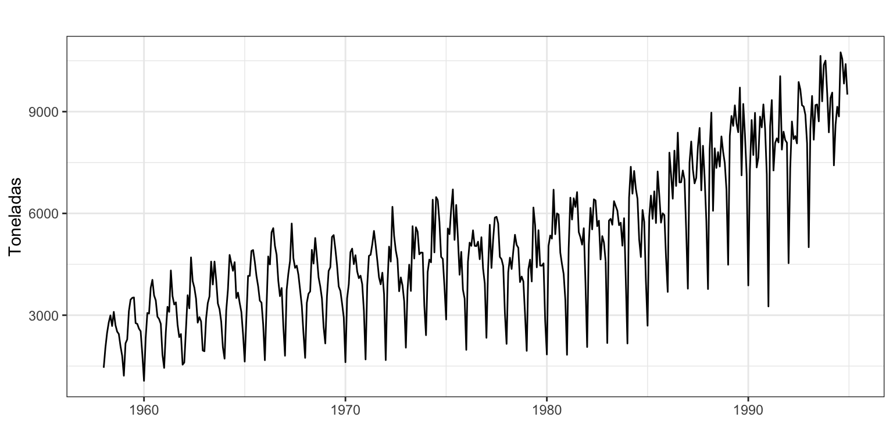
La producción de chocolate presenta una tendencia creciente, especialmente desde los años 80 del siglo pasado, una marcada componente estacional (donde la máxima producción se da en el invierno austral, meses de mayo a agosto, y la menor producción en enero), combinados en un esquema multiplicativo. Trabajaremos con el logaritmo de la serie para linealizar las componentes y reducir la falta de estacionariedad en varianza.
Transformación de la serie
La Figura 18 muestra que solo la doble diferenciación regular y estacional consigue que la transformación logarítmica de Chocolate sea estacionaria y ergódica.
ggAcf(log(chocolate), lag = 48, xlab = "", ylab = "", main = "")
ggAcf(diff(log(chocolate)), lag = 48, xlab = "", ylab = "", main = "")
ggAcf(diff(log(chocolate), lag = 12), lag = 48, xlab = "", ylab = "", main = "")
ggAcf(diff(diff(log(chocolate), lag = 12)), lag = 48, xlab = "", ylab = "", main = "")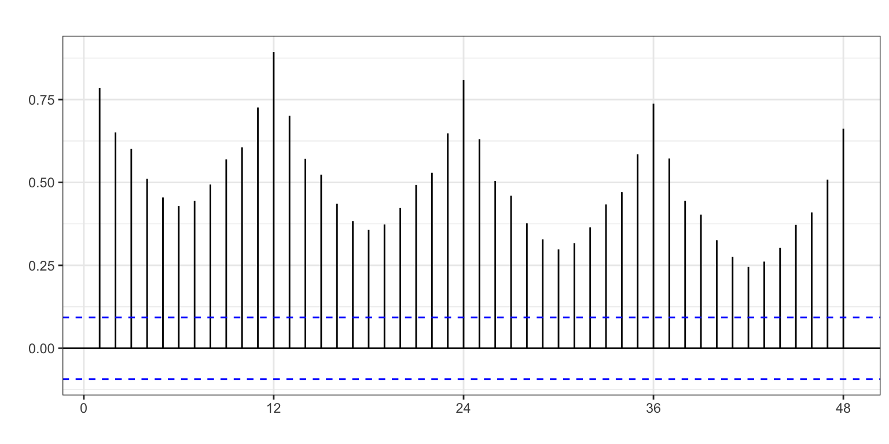
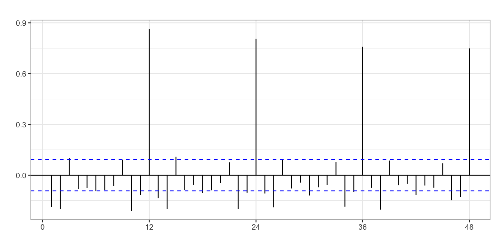
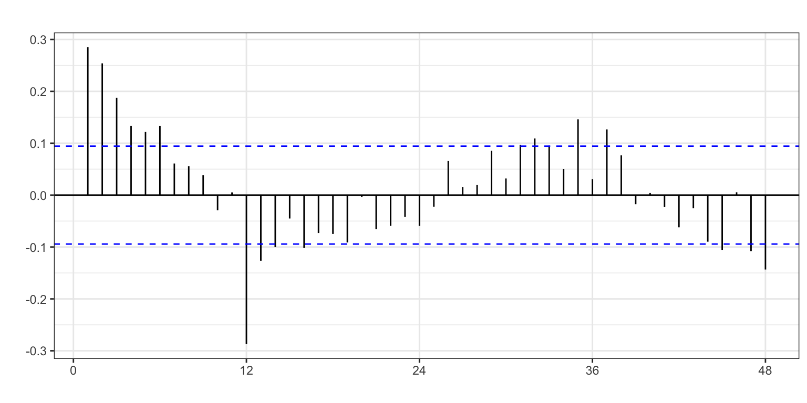
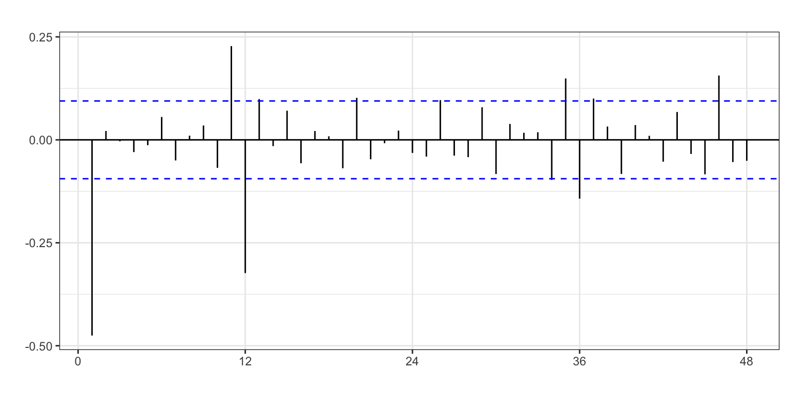
Las funciones que identifican la diferenciación de forma automática avalan esta decisión.
ndiffs(log(chocolate))[1] 1nsdiffs(log(chocolate))[1] 1Podemos concluir que \(d = 1\) y \(D = 1\) o \(\log(chocolate_t) \sim I(1)I_{12}(1)\).
Identificación
Tras transformar la serie, vamos a identificar los valores de \(p\), \(q\), \(P\) y \(Q\) a partir de FAC y FACP de la serie doblemente diferenciada.
ggtsdisplay(diff(diff(log(chocolate), lag = 12)), lag = 48)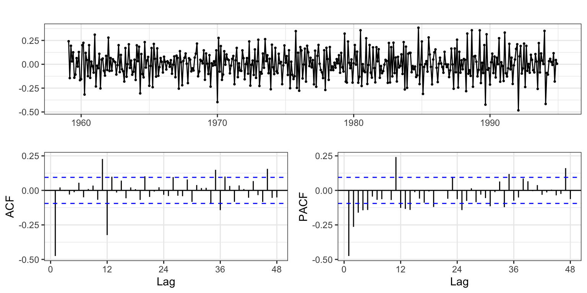
Analizando la FAC y FACP (Figura 19), tenemos que:
- FAC: un pico en la parte regular y decrecimiento en la estacional.
- FACP: decrecimiento en la parte regular y estacional.
Parece ser un ARIMA(0, 1, 1)(1, 1, 1).
¿Qué nos indica auto.arima? Para ayudar a esta función lo máximo posible vamos a definir la variable de intervención días laborables. Por proximidad cultural, histórica y política, usaremos el calendario de Londres para Australia.
DiasLaborables <- bizdays(chocolate, FinCenter = "London")Ahora la incluimos en la autoidentificación.
auto.arima(chocolate, d = 1, D = 1,
lambda = 0,
xreg = cbind(DiasLaborables))Series: chocolate
Regression with ARIMA(1,1,1)(0,1,2)[12] errors
Box Cox transformation: lambda= 0
Coefficients:
ar1 ma1 sma1 sma2 xreg
0.3032 -0.9078 -0.6174 -0.0922 0.0339
s.e. 0.0619 0.0326 0.0501 0.0487 0.0040
sigma^2 = 0.009433: log likelihood = 391.34
AIC=-770.68 AICc=-770.48 BIC=-746.28Indica \(ARIMA_{12}(1,1,1)(0,1,2)\), donde el parámetro \(\theta_{24}\) (sma2) no está claro si es significativo. Además, el efecto días laborables es claramente significativo.
Por último, la función seas (también con un poco de ayuda) identifica un proceso \(ARIMA_{12}(1,1,1)(0,1,1)\), con un efecto Semana Santa (de quince días) un efecto día de la semana y un efecto año bisiesto, que conjuntamente equivalen al efecto días laborables.
summary(seas(diff(diff(log(chocolate), lag = 12))))
Call:
seas(x = diff(diff(log(chocolate), lag = 12)))
Coefficients:
Estimate Std. Error z value Pr(>|z|)
Leap Year 0.037906 0.031418 1.207 0.227622
Mon 0.021718 0.017931 1.211 0.225819
Tue 0.007760 0.018019 0.431 0.666733
Wed 0.025674 0.018144 1.415 0.157080
Thu -0.002852 0.018096 -0.158 0.874763
Fri -0.015197 0.018124 -0.838 0.401771
Sat -0.063503 0.018205 -3.488 0.000486 ***
Easter[15] -0.095747 0.045962 -2.083 0.037234 *
AR-Nonseasonal-01 0.226982 0.056597 4.010 6.06e-05 ***
MA-Nonseasonal-01 0.879176 0.027636 31.812 < 2e-16 ***
MA-Seasonal-12 0.650157 0.040017 16.247 < 2e-16 ***
---
Signif. codes: 0 '***' 0.001 '**' 0.01 '*' 0.05 '.' 0.1 ' ' 1
SEATS adj. ARIMA: (1 0 1)(0 0 1) Obs.: 431 Transform: none
AICc: -737.6, BIC: -689.5 QS (no seasonality in final): 0
Box-Ljung (no autocorr.): 16.86 Shapiro (normality): 0.9879 ***
Messages generated by X-13:
Warnings:
- Automatic transformation selection cannot be done on a series
with zero or negative values.
- At least one visually significant seasonal peak has been found
in one or more of the estimated spectra.
- Series should not be a candidate for seasonal adjustment
because the spectrum of the prior adjusted series (Table B1)
has no visually significant seasonal peaks.Aparentemente ambas funciones identifican el mismo modelo, si del modelo identificado con auto.arima excluimos el parámetro no significativo. Ten en cuenta que los días laborables ya descuentan el efecto de la Semana Santa, así que no es necesario incluir el efecto Semana Santa de forma independiente.
Estimación
Vamos a realizar la primera estimación.
choco.ar1 <- Arima(chocolate, order=c(1, 1, 1),
seasonal = c(0, 1, 1),
lambda = 0,
xreg = DiasLaborables)
choco.ar1Series: chocolate
Regression with ARIMA(1,1,1)(0,1,1)[12] errors
Box Cox transformation: lambda= 0
Coefficients:
ar1 ma1 sma1 xreg
0.2844 -0.8972 -0.6718 0.0339
s.e. 0.0620 0.0333 0.0462 0.0038
sigma^2 = 0.009501: log likelihood = 389.55
AIC=-769.1 AICc=-768.96 BIC=-748.77Ya tenemos un modelo de partida, veamos si es necesaria más intervención.
error <- residuals(choco.ar1)
sderror <- sd(error)
autoplot(error, series="Error",
colour = "black",
xlab = "",
ylab = "Error",
main = "") +
geom_hline(yintercept = c(-3, -2, 2, 3)*sderror,
colour = c("red", "green", "green", "red"),
lty = 2) +
scale_x_continuous(breaks= seq(1958, 1994, 2)) 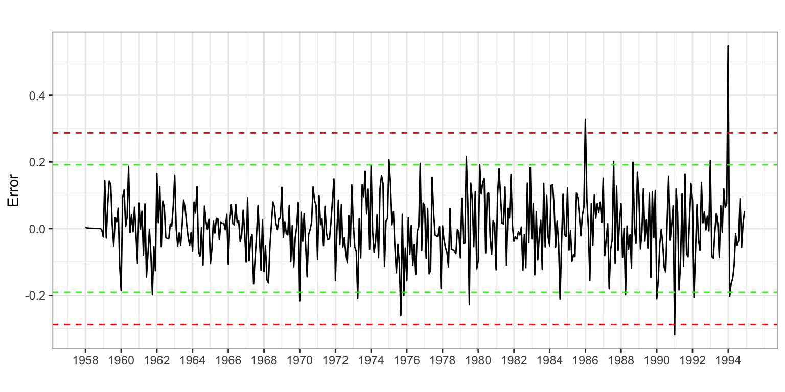
Se observan tres valores claramente atípicos en enero de 1986, 1991 y 1994. Además, hay otro candidato a valor extremo, por superar las 2.5 desviaciones típicas, en septiembre de 1975. Por tanto,
- Se crea una variable de intervención para cada caso
- Se estima de nuevo el modelo incluyendo estas variables
- Se vuelve a analizar si quedan valores atípicos
d0975 <- 1*(cycle(chocolate) == 9 & trunc(time(chocolate)) == 1975)
d0186 <- 1*(cycle(chocolate) == 1 & trunc(time(chocolate)) == 1986)
d0191 <- 1*(cycle(chocolate) == 1 & trunc(time(chocolate)) == 1991)
d0194 <- 1*(cycle(chocolate) == 1 & trunc(time(chocolate)) == 1994)
choco.ar2 <- Arima(chocolate, order=c(1, 1, 1),
seasonal = c(0, 1, 1),
lambda = 0,
xreg = cbind(DiasLaborables, d0975, d0186, d0191, d0194))
choco.ar2Series: chocolate
Regression with ARIMA(1,1,1)(0,1,1)[12] errors
Box Cox transformation: lambda= 0
Coefficients:
ar1 ma1 sma1 DiasLaborables d0975 d0186 d0191
0.3052 -0.8889 -0.6778 0.0363 -0.1630 0.1291 -0.3385
s.e. 0.0646 0.0355 0.0413 0.0035 0.0753 0.0755 0.0769
d0194
0.5128
s.e. 0.0838
sigma^2 = 0.008197: log likelihood = 423.4
AIC=-828.8 AICc=-828.37 BIC=-792.2Ahora debemos volver a verificar si en el nuevo modelo hay valores extremos. Observamos que no hay.
error <- residuals(choco.ar2)
sderror <- sd(error)
autoplot(error, series="Error",
colour = "black",
xlab = "",
ylab = "Error",
main = "") +
geom_hline(yintercept = c(-3, -2, 2, 3)*sderror,
colour = c("red", "green", "green", "red"),
lty = 2) +
scale_x_continuous(breaks= seq(1958, 1994, 2)) 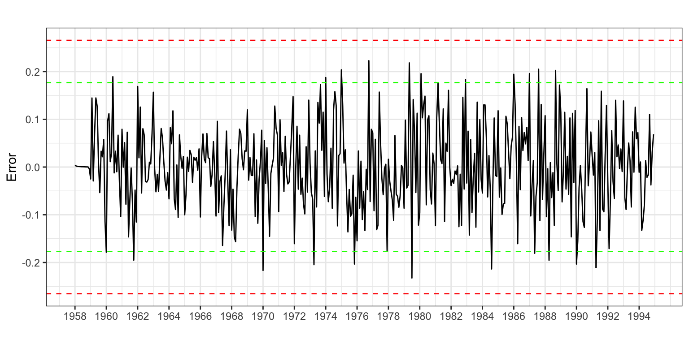
Por último, veamos si todos los coeficientes del modelo son significativos.
ancho <- max(nchar(names(coef(choco.ar2)))) + 2
for(i in 1:length(coef(choco.ar2))) {
wt <- wald.test(b = coef(choco.ar2),
Sigma = vcov(choco.ar2),
Terms = i)
cat("\nCoeficiente: ",
format(names(coef(choco.ar2))[i], width = ancho),
"valor de p: ",
formatC(wt$result$chi2[3], digits = 4, format = "f"))
}
Coeficiente: ar1 valor de p: 0.0000
Coeficiente: ma1 valor de p: 0.0000
Coeficiente: sma1 valor de p: 0.0000
Coeficiente: DiasLaborables valor de p: 0.0000
Coeficiente: d0975 valor de p: 0.0303
Coeficiente: d0186 valor de p: 0.0874
Coeficiente: d0191 valor de p: 0.0000
Coeficiente: d0194 valor de p: 0.0000Aunque uno de ellos (enero 1986) no lo es al 5%, si lo es al 10% así que optamos por dejarlo.
Validación
Error de estimación
Analizando los criterios de bondad de ajuste se tiene que: el error medio de 3 es prácticamente cero por lo que no parece que haya sesgo en las predicciones; en media nos equivocamos en 488 toneladas (RMSE); y el error porcentual medio es 7%, razonable.
accuracy(choco.ar2) ME RMSE MAE MPE MAPE MASE ACF1
Training set 3 488.05 360.71 -0.33 6.99 0.69 -0.05
Incorrelación, Homocedasticidad y Normalidad
Veamos ahora si el residuo es ruido blanco.
Box.test(error, lag = 2,type = "Ljung-Box")
Box-Ljung test
data: error
X-squared = 3.8081, df = 2, p-value = 0.149Box.test(error, lag = 24,type = "Ljung-Box")
Box-Ljung test
data: error
X-squared = 27.763, df = 24, p-value = 0.2701Box.test(error^2, lag = 2, type = "Ljung-Box")
Box-Ljung test
data: error^2
X-squared = 0.077789, df = 2, p-value = 0.9619Box.test(error^2, lag = 24, type = "Ljung-Box")
Box-Ljung test
data: error^2
X-squared = 29.658, df = 24, p-value = 0.1964jarque.bera.test(error)
Jarque Bera Test
data: error
X-squared = 1.0924, df = 2, p-value = 0.5791El error muestra ser incorrelado, homocedástico y seguir una distribución normal.
Interpretación
El modelo teórico es \(log(chocolate) \sim ARIMA_{12}(1, 1, 1)(0, 1, 1) + AI\),
\[(1 - \phi_1 L)(1 - L^{12})(1 - L)\log(chocolate_t) = (1 + \theta_1 L)(1 + \theta_{12} L^{12})\varepsilon_t + AI.\]
Si sustituimos \((1 - L^{12})\log(chocolate_t)\) por \(TVA_{chocolate_t}\), desarrollamos el modelo y sustituimos los parámetros por sus estimaciones, queda
\[\widehat{TVA}_{chocolate_t} = TVA_{chocolate_{t-1}} + 0.31(TVA_{chocolate_{t-1}} - TVA_{chocolate_{t-2}})\]
\[- 0.89\varepsilon_{t-1} - 0.68\varepsilon_{t-12} + 0.60\varepsilon_{t-13}\]
\[+0.036\cdot DiasLaborables - 0.16\cdot d0975 + 0.13 \cdot d0186-0.34 \cdot d0191 + 0.51\cdot d0194.\]
Por tanto:
- La tasa de variación anual en la producción de chocolate para un mes es la misma que la del mes pasado más un 31% del último incremento observado.
- Si en los meses pasados el valor esperado en la tasa de variación se alejó de la real, hay que tenerlo en cuenta para corregir las previsiones.
- Cada día laborable adicional en un mes supone un incremento del 3.6% en la producción.
- En determinados meses hubo unos valores de producción muy alejados de lo esperado.
Predicción de la serie
Una vez dado por válido el modelo podemos pasar a realizar predicciones. Hay que tener en cuenta que hay una variable de intervención de efecto calendario (Días laborables), para la que debemos indicar qué valores tomará en el periodo de predicción. Vamos a fijar el horizonte de predicción en cuatro años (1995 a 1998).
tmp <- ts(rep(0, 48), start = 1995, frequency = 12)
pdl <- bizdays(tmp, FinCenter = "London")
pchoco.ar2 <- forecast(choco.ar2,
h = 48,
xreg = cbind(pdl,
rep(0,48), rep(0,48), rep(0,48), rep(0,48)),
level = 95)
autoplot(pchoco.ar2,
xlab = "",
ylab = "Toneladas",
main = "") +
scale_x_continuous(breaks= seq(1958, 1998, 4)) 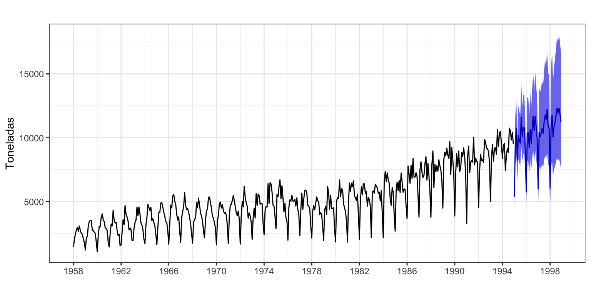
Error de predicción extra-muestral según horizonte temporal
Asumimos que se precisan veinte años para hacer una buena estimación, \(k = 240\), y fijaremos el horizonte temporal en un año, \(h = 12\) meses.
k <- 240
h <- 12
T <- length(chocolate)
s<-T - k - h
mapeArima <- matrix(NA, s + 1, h)
X <- data.frame(cbind(DiasLaborables, d0975, d0186, d0191, d0194))
for (i in 0:s) {
train.set <- subset(chocolate, start = i + 1, end = i + k)
test.set <- subset(chocolate, start = i + k + 1, end = i + k + h)
X.train <- data.frame(X[(i + 1):(i + k),])
hay <- colSums(X.train)
X.train <- X.train[, hay>0]
X.test <- data.frame(X[(i + k + 1):(i + k + h),])
X.test <- X.test[, hay>0]
if (length(X.train) > 0) {
fit <- try(Arima(train.set,
order = c(1, 1, 1),
seasonal = c(0, 1, 1),
lambda = 0,
xreg=as.matrix(X.train)))
} else {
fit <- try(Arima(train.set,
order = c(1, 1, 1),
seasonal = c(0, 1, 1),
lambda = 0))
}
if(!is.element("try-error", class(fit))) {
if (length(X.train) > 0)
fcast <- forecast(fit, h = h, xreg = as.matrix(X.test)) else
fcast <- forecast(fit, h = h)
mapeArima[i + 1,] <- 100*abs(test.set - fcast$mean)/test.set
}
}
errorArima <- colMeans(mapeArima, na.rm = TRUE)
errorArima [1] 8.377471 8.600894 8.872539 9.262283 9.405912 9.251936 9.321219 9.354090
[9] 9.070492 9.241635 9.157093 9.303983ggplot() +
geom_line(aes(x = 1:12, y = errorArima), colour = "Blue") +
ggtitle("") +
xlab("Horizonte temporal de predicción") +
ylab("%") +
scale_x_continuous(breaks= 1:12)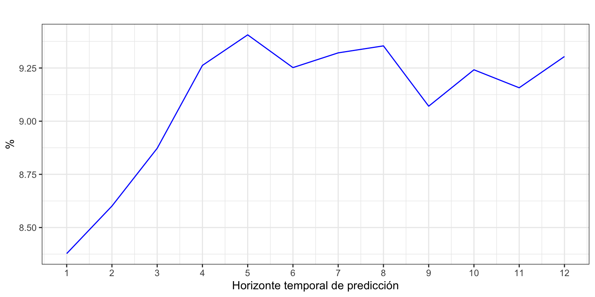
La Figura 23 revela que el error de predicción a un periodo vista es 1.4 puntos porcentuales superior al error de ajuste. Hasta los 5 meses el error aumenta según aumenta el horizonte de predicción. Desde el sexto mes, el error se mantiene estable en torno al 9%-9.5%.
4 Comparación con alisado exponencial
Veamos una comparativa, para los dos ejemplos vistos, entre los resultados obtenidos con ARIMA y con Alisado exponencial
Nacimientos (log)
| Método | Modelo | MAPE | |||
|---|---|---|---|---|---|
| Ajuste | Extra h = 1 | Extra h = 6 | Extra h = 12 | ||
| ARIMA | ARIMA(0,1,1)(0,1,1) + AI | 1.54 | 1.89 | 2.59 | 3.28 |
| Alisado | ETS(A,Ad,A) | 1.74 | 1.93 | 2.77 | 3.67 |
Para Nacimientos, la mejora en los indicadores de calidad con ARIMA respecto de Alisado es tan pequeña que no justifica su aplicación. Incluso para previsiones extramuestrales a 12 meses vista, Alisado sólo es inferior en medio punto porcentual a ARIMA.
Exportaciones (log)
| Método | Modelo | MAPE | |||
|---|---|---|---|---|---|
| Ajuste | Extra h = 1 | Extra h = 6 | Extra h = 12 | ||
| ARIMA | ARIMA(0,1,1)(0,1,1) + AI | 2.63 | 2.79 | 4.11 | 5.35 |
| Alisado | ETS(A,Ad,A) | 4.80 | 5.23 | 6.38 | 7.92 |
En el caso de Exportaciones, la mejora en la calidad del ajuste con ARIMA respecto de Alisado es de más de 2 puntos porcentuales, con independencia del horizonte temporal. En este caso, ARIMA gracias a de la intervención ofrece mejores resultados.
Chocolate (log)
| Método | Modelo | MAPE | |||
|---|---|---|---|---|---|
| Ajuste | Extra h = 1 | Extra h = 6 | Extra h = 12 | ||
| ARIMA | ARIMA(1,1,1)(0,1,1) + AI | 6.99 | 8.38 | 9.25 | 9.30 |
| Alisado | ETS(A,A,A) | 8.15 | 9.43 | 11.39 | 9.73 |
En el caso de Chocolate, la mejora en la calidad del ajuste con ARIMA respecto de Alisado es entre 1 y 2 puntos porcentuales en previsiones a unos pocos meses vista. Sin embargo, a doce meses vista ambos métodos ofrecen similar calidad en sus predicciones.
5 Resumen de los comandos utilizados
| Función | Paquete | Descripción |
|---|---|---|
mothdays |
forecast | da el número de días de cada mes |
easter |
forecast | da la proporción de días de Semana Santa que caen en Marzo y Abril |
bizdays |
forecast | da el número de días laborables de cada mes |
Footnotes
Acude al epígrafe Intervención del Tema 2 para refrescar estos conceptos↩︎
Rpermite crear tu propio calendario de festivos y existen otras librerías que extienden las opciones debizdays. En el ejemplo de Pasajeros puedes ver como construir la serie de días laborables del mes para España paso a paso.↩︎